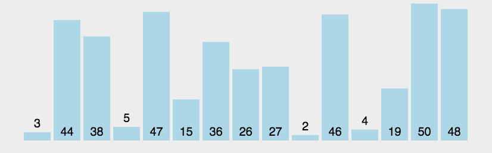

# 数组
区别于普通的单个值变量，数组可以有序的存储多个值在同一变量中。数组属于对象类型，其变量存储的是数组所占用的空间在内存中的地址，数组占用的是连续的多个同一类型的内存空间。
数组在创建之初就要确定其存储的所有值的统一数据类型，以及数组所占空间的长度，也就是值的数量。并且在数组创建之后，其空间大小和数据类型都无法再改变。
数组是有序存储多个值的空间，存在以下术语：
- 长度：数组所占用的空间数，也就是能存储多少个同类型数值。
- 元素：数组中存储的每一个值对于数组来说，都是数组的元素。
- 下标：数组中的值存在顺序，数组下标则表示数组中值在数组中的位置，下标将从0开始。
# 数组的声明与创建
# 声明数组
数组声明时，使用中括号来定义，并且数组在声明时就要规定数组中元素的统一类型：
int arr[]; //创建一个数组arr，类型为int类型。
int[] arr2; //创建一个int类型的数组，名字叫arr2。
2
以上两种数组声明的方式并没有区别，在元素类型后或者数组变量名后书写中括号都可以。
在主函数中，String[] args参数就表示其要接受一个String类型的数组，数组在主函数中命名为args。
# 创建数组
创建数组对象存在两种方式，可以在创建数组时只指定空间的大小，那数组中的每个元素都将采用默认值。还可以在创建数组时直接规定每个元素的具体值，数组的长度会根据值的数量自动计算：
new int[10];//创建一个int类型的数组，能够存储十个值！
new int[]{1,2,3,4};//此创建方式是第二种创建方式的完全体。
2
数组在创建之后，如果只规定了数组的大小，那每个元素都将采用默认值：
| 数据类型 | 默认值 |
|---|---|
| byte/short/int/long | 0 |
| double/float | 0.0 |
| boolean | false |
| char | int类型的0，转换为一个空格 |
| Object（对象数据类型） | null |
除了能够使用new语句创建数组对象，还可以简写使用大括号的方式直接规定数组中每一个元素的值：
int arr1[] = new int[10];//创建一个int类型的数组，能够存储十个值！
int arr3[] = new int[]{1,2,3,4};//此创建方式是第二种创建方式的完全体。
int arr2[] = {1,2,3,4};//创建一个数组存储了四个元素，长度为4。
2
3
4
简写的方式只能在直接赋值到数组引用时使用，无法单独作为语句使用。
# 数组的存取值
数组中的值都是有序的，每一个元素在数组中都使用下标来标记位置，下标从0开始。也就是说0号下标的元素就是数组的第一个元素，数组的最后一个元素的下标是数组长度减一的下标。
# 存值
根据下标来往数组的指定元素上存储数据。
int arr[] = new int[10]; //创建一个int类型的数组，能够存储十个值！
arr[0] = 12; //定位到数组的第0号下标的元素上，并赋值为12.
arr[1] = 13;
arr[2] = 14;
//...
arr[9] = 20;
2
3
4
5
6
# 取值
根据下标来取出指定元素中的值。
int arr[] = new int[10]; //创建一个int类型的数组，能够存储十个值！
arr[0] = 12; //定位到数组的第0号下标的元素上，并赋值为12.
int index0 = arr[0]; //将数组0号下标上的元素值取出赋值给index0.
2
3
# 遍历
遍历也就是讲所有的元素都输出使用，数组提供了一个length属性来表示长度，通过数组长度就能确定最大下标，从而来对数组进行遍历：
int arr[] = {18,21,22,19,35,40,13,25,48,75};
//遍历
for(int i=0;i<=arr.length-1;i++){
System.out.println(arr[i]);//在定位到元素并使用的时候，实际上使用的是值！
}
2
3
4
5
6
如果选中了超出数组最大下标的下标，则会在程序运行时报异常。
# 数组的默认值
上文中，可以创建一个指定空间大小的数组，但并不对元素进行赋值。那元素会自动的赋上默认值：
int arr1[] = new int[10];//创建一个int类型的数组，能够存储十个值！
| 数据类型 | 默认值 |
|---|---|
| byte/short/int/long | 0 |
| double/float | 0.0 |
| boolean | false |
| char | int类型的0 |
| Object（对象数据类型） | null |
# 数组的常见操作练习
# 数组的扩容
将原有的数组元素保留，新增进去部分元素，生成新的数组。
- 因为数组的长度在创建之后就无法改变了，所以只能创建新的数组，新数组是大于老数组的。
- 第一步是将老数组中的元素迁移到新数组中。
- 第二步是在新数组的尾部添加新的元素。
可以手动的自己进行迁移，还可以借助System.arrayCopy()进行迁移。
public static void arrayCopy(){
//使用System.arrayCopy(),进行数组数据迁移。
/*
arraycopy(Object src, int srcPos, Object dest, int destPos, int length);
src - 源数组(将要被拷贝的数组)。
srcPos - 源数组中的起始位置。
dest - 目标数组(收集元素的新数组)。
destPos - 目标数据中的起始位置。
length - 要复制的数组元素的数量。
*/
int[] arr1 = {1,2,3,4};
int[] arr2 = {10,11,12,13};
int[] arr3 = new int[arr1.length+arr2.length];
//进行数组拷贝
System.arraycopy(arr1,0,arr3,0,arr1.length);
//不要再从0开始了，要不就把arr1的元素给覆盖了
System.arraycopy(arr2,0,arr3,arr1.length,arr2.length);
//显示测试
for(int i=0;i<=arr3.length-1;i++){
System.out.println(arr3[i]);
}
}
public static void array(){
/*变量的连续声明和赋值
int a=1,b=2,c=10;
System.out.println(a);
System.out.println(b);
System.out.println(c);
*/
int[] arr1 = {1,2,3,4};
int[] arr2 = {10,11,12,13};
//将arr2数组添加到arr1数组的尾部。
//1. 创建一个可以容纳两个数组所有元素的大数组
int[] newArr = new int[arr1.length+arr2.length];
//2. 将arr1的元素迁移到新数组中。
for(int i=0;i<=arr1.length-1;i++){
newArr[i] = arr1[i];
}
//3. 将arr2的元素迁移到新数组中（从第arr1.length号下标开始迁移）。
//for循环中，用到了变量的连续声明和赋值：int i=arr1.length,index=0;
//for循环中，i表示的是新数组的下标，index表示arr2数组的下标，均不可越界：i<=newArr.length-1&&index<=arr2.length-1;
//for循环中，递增运算采用两个值的连续递增：i++,index++;
for(int i=arr1.length,index=0;i<=newArr.length-1&&index<=arr2.length-1;i++,index++){
newArr[i] = arr2[index];
}
//输出测试
for(int i=0;i<=newArr.length-1;i++){
System.out.println(newArr[i]);
}
}
2
3
4
5
6
7
8
9
10
11
12
13
14
15
16
17
18
19
20
21
22
23
24
25
26
27
28
29
30
31
32
33
34
35
36
37
38
39
40
41
42
43
44
45
46
47
48
49
50
51
52
53
54
55
56
57
58
59
60
61
# 数组指定元素的删除
//deleteIndex表示要删除哪个位置上的元素（下标-1）
public static void delete(int deleteIndex){
int[] arr1 = {1,2,3,4,5,6,7};//原数组
int[] newArr = new int[arr1.length-1];//删除元素后存储数据的数组
//for循环中，i变量表示原数组的下标；index表示新数组的下标。
//for循环中，原数组和新数组均不可越界：i<=arr1.length-1 && index<=newArr.length-1。
for(int i=0,index=0;i<=arr1.length-1 && index<=newArr.length-1;i++){
//如果正在遍历中的原数组中的元素刚好是用户要删除的元素
if(i == deleteIndex-1){
continue;//跳过，进行下一次的循环，下一次循环将更新i的值，开始新的下标的元素
}
//常规操作（没有跳出的话），将老数组中的元素放到新数组的下标中。
newArr[index] = arr1[i];
//新数组下标递增：如果跳过了，新数组的下标是不会递增的。
index++;
}
//显示测试
for(int i=0;i<=newArr.length-1;i++){
System.out.println(newArr[i]);
}
}
2
3
4
5
6
7
8
9
10
11
12
13
14
15
16
17
18
19
20
21
22
23
24
25
# 往指定位置添加元素
/*
index：往哪个位置上添加内容
data：添加什么元素
arr：往哪个数组中添加（原数组）
*/
public static int[] insertArrayAtIndex(int index,int data,int[] arr){
int[] newArr = new int[arr.length+1];
for(int i=0;i<=index-2;i++){
newArr[i] = arr[i];
}
newArr[index-1] = data;
for(int i=index;i<=newArr.length-1;i++){
newArr[i] = arr[i-1];
}
return newArr;
}
//第二种写法：将x放置到arr数组的第index号元素下。
public static int[] install(int index,int x,int[] arr){
int[] newArr = new int[arr.length+1];
for(int i=0,j=0;i<=arr.length-1;i++,j++){
if(i==index-1){
newArr[i] = x;
j++;
}
newArr[j] = arr[i];
}
return newArr;
}
2
3
4
5
6
7
8
9
10
11
12
13
14
15
16
17
18
19
20
21
22
23
24
25
26
27
28
29
30
31
32
# 数组中数据的排序
从小到大的将数组进行排序，或者从大到小的进行排序，属于算法的一种。以下程序进行了加速，避免了许多无用的循环次数，也是效率最高的写法。
# 冒泡排序
冒泡排序的原理是在循环数组的时候，将相近的两个元素进行比较，并将较小的元素放到前面。每次循环可以确定一个最大的元素，经历多次循环则会将所有元素排序完成。

public static void paiXu(){
int[] arr1 = {32,15,78,9,42};//预制一个供排序的数组
for(int j=0;j<=arr1.length-2;j++){//4.以下这种遍历要经历数组长度-1次
//int a = 0;
for(int i=0;i<=arr1.length-2-j;i++){//3.这样的交换要经历长度-1次 5.这里的循环次数受到外层循环的影响，所有再另加一个-j
//a+=1;
if(arr1[i]<arr1[i+1]){//2.如果数组的某一个元素小于后面的元素则执行交换
//1.以下为元素交换语句
int bm = 0;
bm = arr1[i];
arr1[i] = arr1[i+1];
arr1[i+1] = bm;
}
}
//System.out.println((j+1)+"==>"+a);
}
for(int i=0;i<=arr1.length-1;i++){
System.out.println(arr1[i]);
}
}
2
3
4
5
6
7
8
9
10
11
12
13
14
15
16
17
18
19
20
# 选择排序
选择排序的原理是将一个元素与其他的所有元素进行比较，并将比较过程中最小的元素与当前元素交换位置，效率与冒泡排序相同。

public static void paiXu2(){
int[] arr1 = {98,76,54,10,101};//准备一个要遍历的数组
for(int i=0;i<=arr1.length-2;i++){//1.第一次循环是0，第二次循环是1
for(int j=i+1;j<=arr1.length-1;j++){//2.外层循环的每一次，都将使此循环执行length-1次
//3.以上两个循环的配合，就可以从0号下标的值开始与后面所有的值进行比较
if(arr1[i]<arr1[j]){
//4.执行交换的代码
int bm = arr1[i];
arr1[i] = arr1[j];
arr1[j] = bm;
}
}
}
//输出测试
for(int i=0;i<=arr1.length-1;i++){
System.out.println(arr1[i]);
}
}
2
3
4
5
6
7
8
9
10
11
12
13
14
15
16
17
18
19
# 多维数组
如果数组的元素也是一个数组，则变成了二维数组，也就从线变成了面。如果三层数组相互嵌套，就成了多维数组。理论上数组可以无限嵌套，这种都称为多维数组。
# 二维数组的创建
二维数组中，同样只能存储同一类型的数据，并且长度是不可改变的。如下文定义的就是数组中存储int类型的数组：
int[][] a2 = new int[10][12];
# 二维数组的长度
二维数组的长度：二维数组的长度是此数组中包含了多少个子数组。
a2.length; //获得值为：10，表示此二维数组中存在着10个子数组。
二维数组的所有子数组的长度都是相同的，可以获得其中一个子数组的长度来确定所有子数组的长度：
a2[0].length; //获得值为：12，表示此二维数组中每个子数组长度为12.
# 二维数组的遍历练习
int[][] a2 = new int[10][12];
for(int i=0;i<=a2.length-1;i++){
for(int j=0;j<=a2[i].length-1;j++){
System.out.print(a2[i][j]);
}
System.out.println();
}
2
3
4
5
6
7
8
# 数组类
Java提供了Arrays类用于操作数组，可以完成对数组中的排序、搜索、赋值、扩容等功能。以下展示几个使用的方法：
| 方法名和参数 | 方法作用 | 返回值介绍 |
|---|---|---|
| binarySearch(copyOf(boolean[] original, int newLength)[] a, 任何类型 key) | 从a数组查找key的下标 | key在a中的下标值，int类型 |
| binarySearch(任何类型[] a, int fromIndex, int toIndex, 任何类型 key) | 从a数组的fromIndex下标到toIndex下标查询key的下标 | key在a中的下标值，int类型 |
| copyOf(任何类型[] original, int newLength) | 截取original数组的newLength个元素，生成新数组 | 新的与原数组类型相同的数组 |
| copyOfRange(任何类型[] original, int from, int to) | 截取original数组从from到to的指定长度数组 | 新的与原数组类型相同的数组 |
| fill(任何类型[] a, 任何类型val) | 将数组a的所有元素替换为val | 无返回值，结果直接体现在数组a上 |
| fill(任何类型[] a, int fromIndex, int toIndex, 任何类型val) | 将数组中fromIndex到toIndex之间的元素替换成val | 无返回值，结果直接体现在数组a上 |
| sort(任何类型[] a) | 对数组a进行升序排序 | 无返回值，结果直接体现在数组a上 |
| sort(任何类型[] a, int fromIndex, int toIndex) | 对数组a中fromIndex到toIndex之间的元素进行升序排序 | 无返回值，结果直接体现在数组a上 |
# ForEach循环
传统for循环采用下标的方式来遍历数组，foreach可以在不借助下标的情况下实现对数组的遍历：
for(接收集合或者数组中每一个元素的变量:集合或者数组的引用名){
//在代码块中，冒号右边的变量将变成集合或者数组中所有的值
}
2
3
在遍历时，将把数组中的每个元素赋值到冒号左侧的变量中，然后进入代码块执行，执行完成后自动获取下一个元素放到冒号左边的变量中继续执行代码块，直到数组中没有元素为止：
int[] arr = {3,6,1,4,2,4,7};
for(int a:arr){ //a将会变成arr数组中所有的值，所以变量的类型需要注意
System.out.print(a); //在代码块中可以直接使用a变量，来表示遍历中arr数组的某一个元素
}
2
3
4